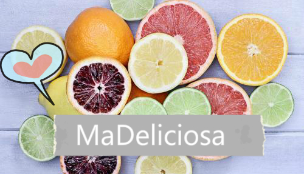

Detalles Bocetos Miembros Planificación Contacto
Nuestra idea es realizar una página web enfocado al mundo de la restauración madrileña, aportando un servicio a los hosteleros donde pueden publicar sus negocios, cartas, promociones, localización, horarios y opiniones de sus clientes. También ofertamos la opción de poder realizar reservas y envío a domicilio. Además ofrecemos a los restaurantes servicio de transporte gestionado por nosotros. Proporcionamos un formulario de contacto para poder resolver dudas.
